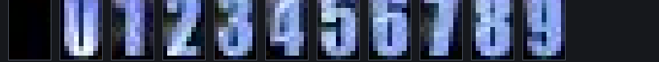

Component sheet · vg_lite · RB-338 rebuild · 12015 led-digit-font
Seven-segment readout, redrawn
The original was an 11-cell bitmap font at 9×16 — blank, then 0–9. This is a fresh vector face: seven chamfered segments on a 64×112 cell, 6° of rake, unlit segments left visible as ghosts so the readout keeps the depth of a real panel. Index 0 is still blank, because leading-zero suppression depends on it.
7 hexagons · 6 verts each
no gradients
bloom = stroke pass
luminance-only states
02 · Replaces

12015 · 11 cells · 9×16 px · bitmap
index 0 blank · one size · one colour
vector · 1 cell path set · 4 accents
index 0 still blank · any size · any hue
Kept from the original: the near-black #181830 ground, the pale blue-white lit face, and state change by luminance alone. Dropped: the pixel grid, the fixed 9×16 cell, and the single-colour limit.
03 · Glyph set
Digits first, then the hex and status glyphs the transport bar needs.
04 · Sizes
One path set, scaled by the matrix. Below ~28px the ghosts are dropped — they turn to mush.
20 px · no ghost
32 px
56 px
92 px
05 · Field states
Geometry never changes — only which segments are lit, and how hard.
{{ s.name }}
{{ s.note }}
06 · Draw list, per digit
{{ r.a }}
{{ r.b }}
{{ r.c }}
Seven paths are uploaded once and reused for every digit and every field; the digit only picks which of them go in the lit pass. A four-digit tempo field is 28 path draws worst case, all flat fills.
07 · vg_lite
{{ snippet }}
The bloom is a stroke pass on the same path at 28% alpha, not a blur — no scratch buffer, no radial gradient, and it survives the guide's "colour is reserved for meaning" rule because the halo is always the accent hue.